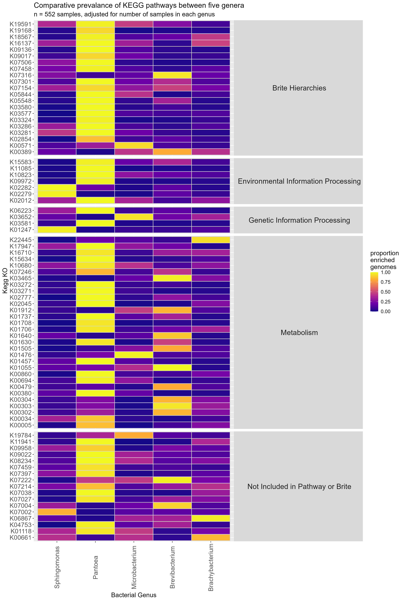
Notebook 4
EggNOG-mapper heatmaps UPGRADED (2025-02-27)
Introduction
The heatmaps produced previously(Notebook 3) were alright, but on a fundamental level are flawed. In this new section I aim to correct the errors seen. Precisely:
the problem of small columns, those with only 1 sample in 1 column jumping to 100%
the group names could be tweaked
This should produce heatmaps worthy of analysis, this could be seen by the disintegration of the “human disease” section, which should not exist in these samples.
Methods
The pipeline used will be fundamentally the same, however I shall add a step where i filter the dataset so that those where the row total is below 1000 will be cut, this should mean that only “significant” genes are identified. (i.e. if column A has 8,000 expressions, and the other 4 have 2,000 between them, that is more important than column A having 4 and there only being 1 sample between the 4 other columns, despite the fact that both are 80%). I also aim to work my way back through the pipeline and properly explain what each bit of code does, for me mainly, but who knows who might adapt this code in future. This is because already I am trying to go back and change things, and i want to know what happens where etc.
Past this i should have good heatmaps i can then analyse, do a commonality test to see what gets universally expressed and then some GTDB-TK trees that i never got around to doing, however, I need to balance this with doing my Dissertation plan and my ENS-2002 final report. I am going to need to eggnog the samples for the other test we wanted to do (Notebook2) concerning comparing genera inside of their families, i believe he said only to do this for Sphingomonas and Microbacterium, as those are the samples we have with more than 1 in a genus, that however is sounding like a “summer-kind-of-thing”.
Entry 2025-03-01: I tried to do this today, to work out how to make the values into proportions that weighted relevant to their group size. I could not work it out, it did not make sense. So, i went back to the beginning. I looked at the output from eggNOG-mapper, a KEGG KO is a name given to either a specific protein or a very specific group of proteins of specific and same function. A pathway/map ID is a process, think like the calvin or krebs cycle for respiration, it is something that involves many proteins. Thus, i concluded that the reason that the past heatmaps contained so many human disease entries was because the pathways shared many proteins in common with those used in our bacteria, NOT that our bacteria were involved in those processes. This was a real head-scratcher, but it was good learning they are not the same thing.
So, what happens when i enrich is that is gets the data from the KEGG website about certain KO values and brings back all the data about it, including it’s map ID/ pathway. Aaron said this is what i should use, but… how can it be? Epstein-Barr infection uses a protein (KO value) found in Sphingomonas, but Epstein-Barr is not in sphingomonas, so its wrong, this also explains why some pathways have an enrichment of over 7000 in some genera (group size either 200ish or 30ish), because many proteins are used in that pathway, it is important, but not exclusive to the bacterial individual. Anyway, i concluded that i should instead skip the enrichment and make the heatmaps based around KO values, because that is what this process is about, seeing what PROTEINS are coded for by the genomes of certain specific bacteria, NOT where those proteins happen to be used. I shall post the result below when i do that, i shall have to have a long discussion with Aaron about why the numbers dont add up, because this course makes sense to me, but am i just not getting something? Something is wrong and i cant find the answers.
KO style heatmaps
Right, i have not updated this in a while, to be honest this section was tiring and time-consuming so i have not thought about this until now. As outlined above i made the move to KO heatmaps for a finer “resolution” so that i could see what proteins are being coded for, and where they are used. I did this all in one file so it was together in case i decided not to use it there would not be files all over, this is KO_pipeline.R. I decided to go hard on the comment writing so i can take a break and pick it up as smoothly as possible. Essentially, this document skips the enrichment step (because when the enrichment step cant place a KO in a pathway it just removes it, dont know what that means). It just takes the eggnog output and creates a list of the KO values that are found, then those lists are grouped into each genus so that a count can be calculated, which is then divided by the total size (the number of samples I have in each genus. The file then does further processing (pivoting and filtering). So that the base of the heatmap can be generated. For one of the heatmaps i made it so that if a KO appears in multiple pathways, it is grouped as such.
Pathway maps
I discovered that I did the enrichment wrong, I had been doing it one KO at a time, instead of an organism at a time, so it was giving out the wrong dataset. Once i realised this, it was a quick fix to create a new pipeline based around map pathways. This is most likely what Aaron wants to see. The KOs are now being put into pathways that can be ordered by size to give an indication of how likely that pathway is, this has removed human disease. I also had the idea to now divide that number by the number of KOs in the said pathways, this should show how much of the pipeline is being expressed for more accuracy, this will use and API call and could be rather simple, but i dont have the time for that now. Another idea i dont have the time for is to just focus on the Bangor samples to see what more specifically is happening in the microbiome.
I decided to run just the bangor samples, it produced a very interesting heatmap, Figure 4. It shows our samples are very typical of their genera. This leads me to other avenues of thought, such as, what if I did the other mini-analyses (remove pantoea, commonality check, map).
Another addition i want to make is to bring in data about how much of a pathway was being expressed, because knowing that “100 out of 1000 total” genes were in that pathway is good, but what if the total for the pathway is 200, and then only 50% is being expressed, i think it is interesting anyway. So I will download data about the pathways from the kegg website using the REST API.
Results
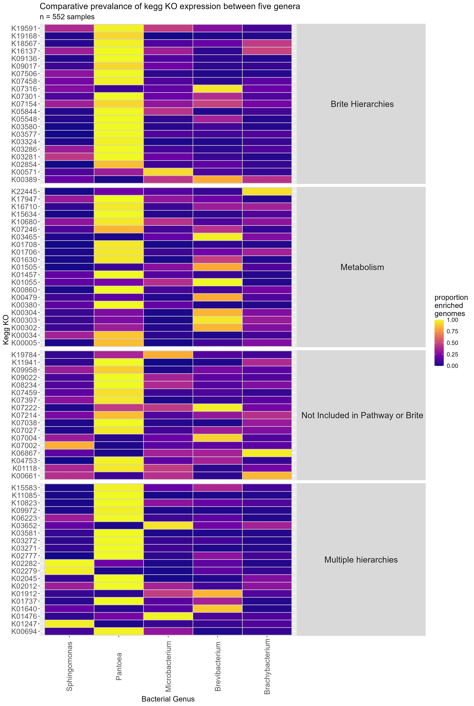
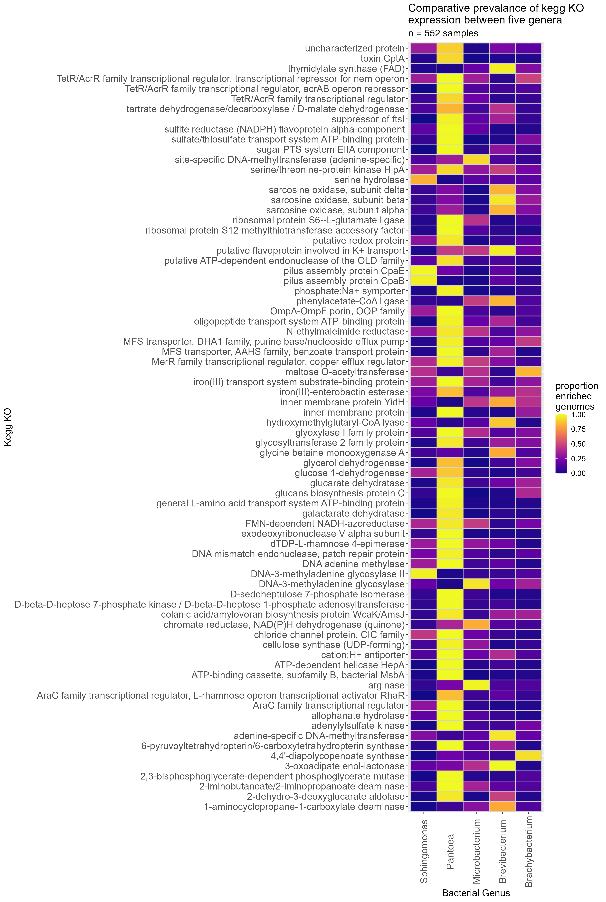
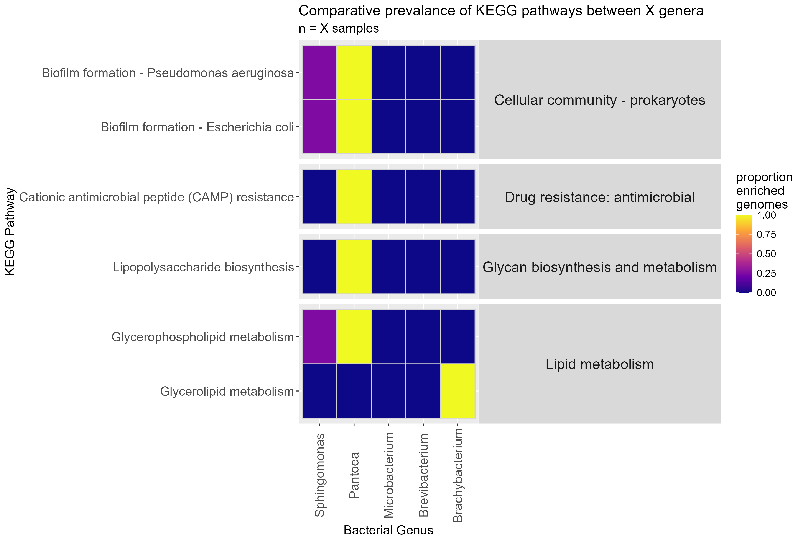
I am still unsure if these heatmaps are correct. I have a meeting with Aaron on Tuesday the 11th of March to discuss this. I find it interesting that comparing Figure 1 and Figure 2 shows that only the KOs falling under the Metabolism hierarchy are confirmed to be the purpose of those genes in these bacteria, with the “Genetic and Environmental Information Processing” groups both falling under “Multiple hierarchies”.
Pantoea continues to dominate these heatmaps as well, being the most distinct of all the groups. Perhaps future heatmaps should remove this for more fair comparison of the other 4 genera. It may also be prudent to switch back to map pathways, though i am not sure how that would work, hopefully Aaron can clarify that for me. Another possible avenue is looking for similarities where all groups are above e.g. 80%, which should not be too difficult.
One of my problems when rationalising map ids over KO values is that many KO values are placed in multiple pathways, so how do we know which pathways are being expressed in these individuals? perhaps I can group by how many of the KOs are in a pathway for each genera, try to find which genera is most likely for it to be, i.e. if 20 KOs are found to correlate to one pathway, but 5 of those are used in another it is likely the first pathway.
Proper heatmap and dashboards
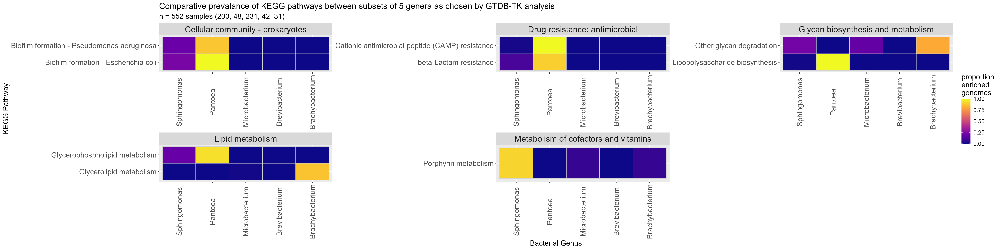
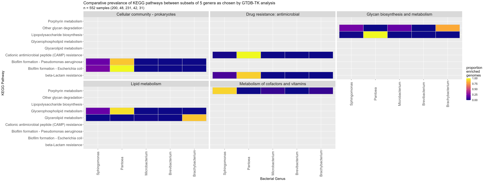
These heatmaps are more of errors of code i found amusing, it fixes Aarons issues about naming at least, but I don’t think it is quite right.
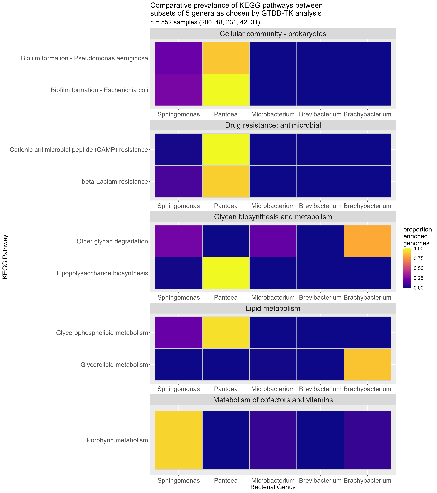
GTDB-TK De-Novo phylogenetic trees (2025-02-05 to 2025-02-__)
Introduction
A while back, i ran GTDB-TK in order to give me a list of accessions i needed to pull down from the NCBI website. This did output a tree, but i wanted to focus on getting the heatmap processes done. Now i have time whilst those are running to do this with all the bells and whistles.
Methods
The file this section concerns is called gtdbtk.bac120.decorated.tree. I want to read this file into R, cut it down so i have multiple trees containing the Bangor-made accessions and modify it so that it has nice aesthetics (for example colouring the nodes based on the accession’s status). This serves to identify the species of the Bangor samples at a higher level of accuracy than my work in the summer.
2025-03-12: I adapted the code from the Wolbachia mini-project Aaron asked me to do for his paper. This created GTDBTKtrees.R (the link is to a work in progress build). I toyed with the idea of doing an interactive heatmap for fun, but i think the time i would have to sink into understanding all of the systems is too much.
2025-03-13: I was having issues with the input file, so i went back and made a new one using NCBI_Metadata_collector_2nd_ver.R . This is not ideal, as it means I have two of these files around, but it was the quicker solution, I may have to go back and fix during my dissertation. This then helped in creating a new set of phylogenetic trees.
In doing this I also stumbled across the code i used to do a table of metadata for the Wolbachia project, this code i then adapted for these samples.
## Results
Warning: package 'phylocanvas' was built under R version 4.4.3── Attaching core tidyverse packages ──────────────────────── tidyverse 2.0.0 ──
✔ dplyr 1.1.4 ✔ readr 2.1.5
✔ forcats 1.0.0 ✔ stringr 1.5.1
✔ ggplot2 3.5.1 ✔ tibble 3.2.1
✔ lubridate 1.9.3 ✔ tidyr 1.3.1
✔ purrr 1.0.2
── Conflicts ────────────────────────────────────────── tidyverse_conflicts() ──
✖ dplyr::filter() masks stats::filter()
✖ dplyr::lag() masks stats::lag()
ℹ Use the conflicted package (<http://conflicted.r-lib.org/>) to force all conflicts to become errors
Attaching package: 'ape'
The following object is masked from 'package:dplyr':
where
Rows: 587 Columns: 21
── Column specification ────────────────────────────────────────────────────────
Delimiter: "\t"
chr (18): accession, domain, phylum, class, order, family, genus, species, c...
dbl (3): completeness, completeness_percentile, contamination
ℹ Use `spec()` to retrieve the full column specification for this data.
ℹ Specify the column types or set `show_col_types = FALSE` to quiet this message.
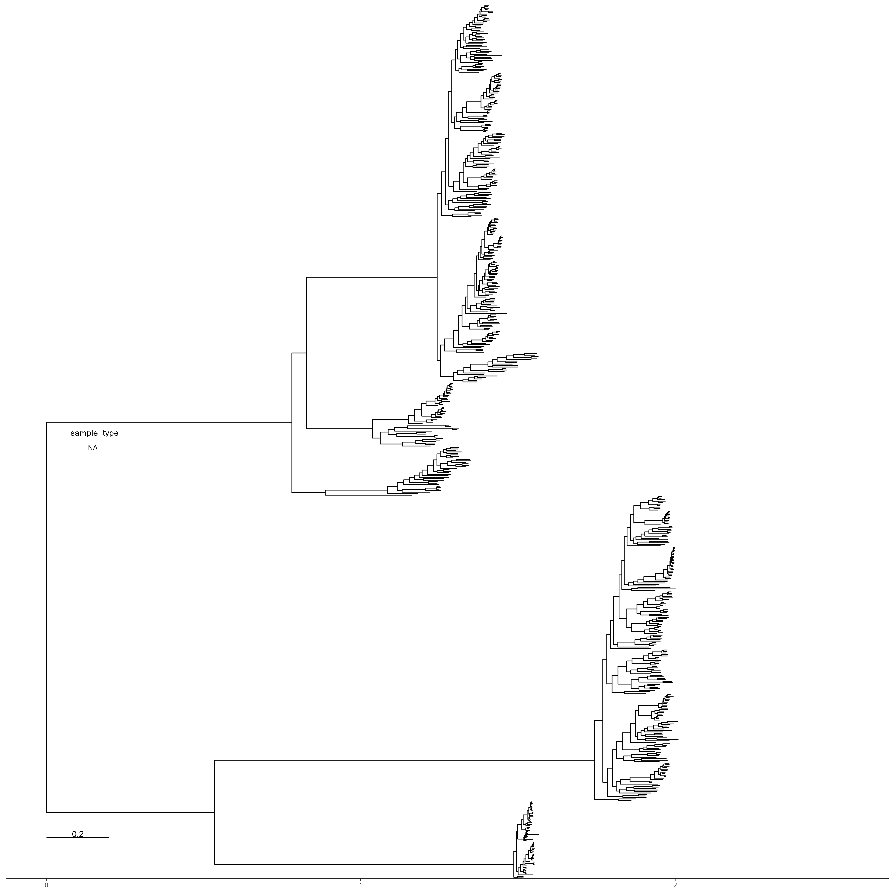
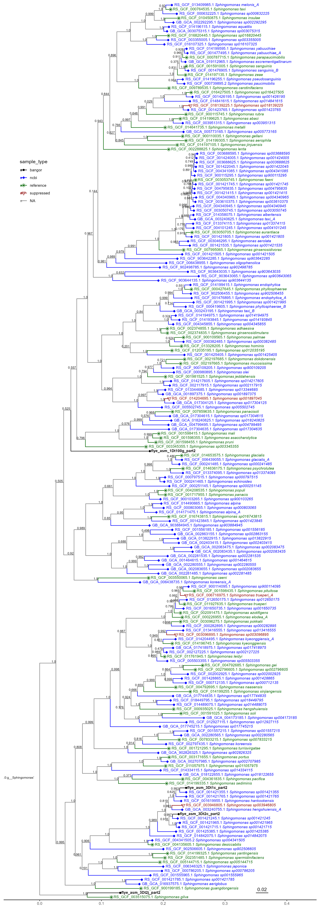
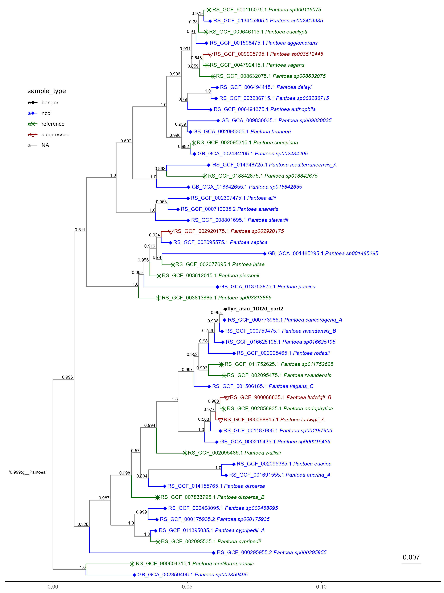
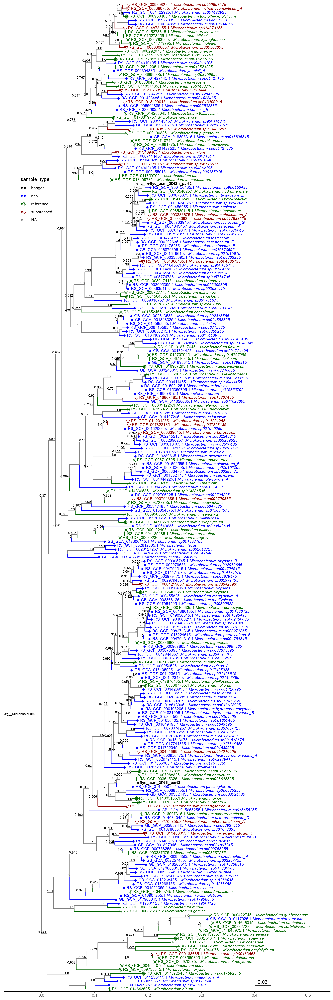
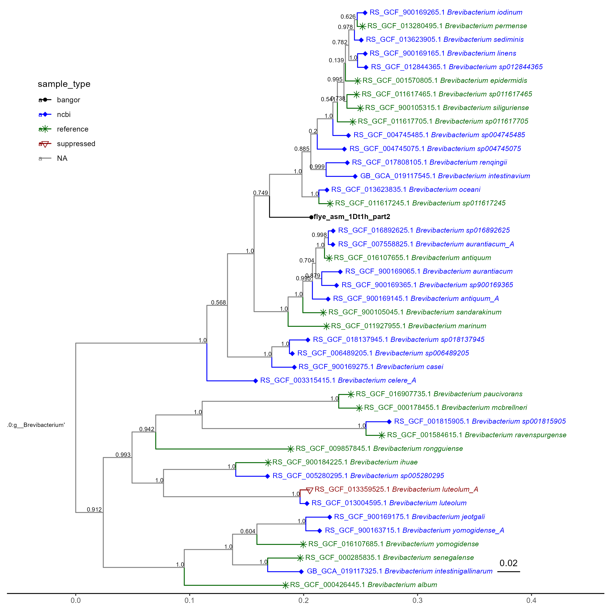
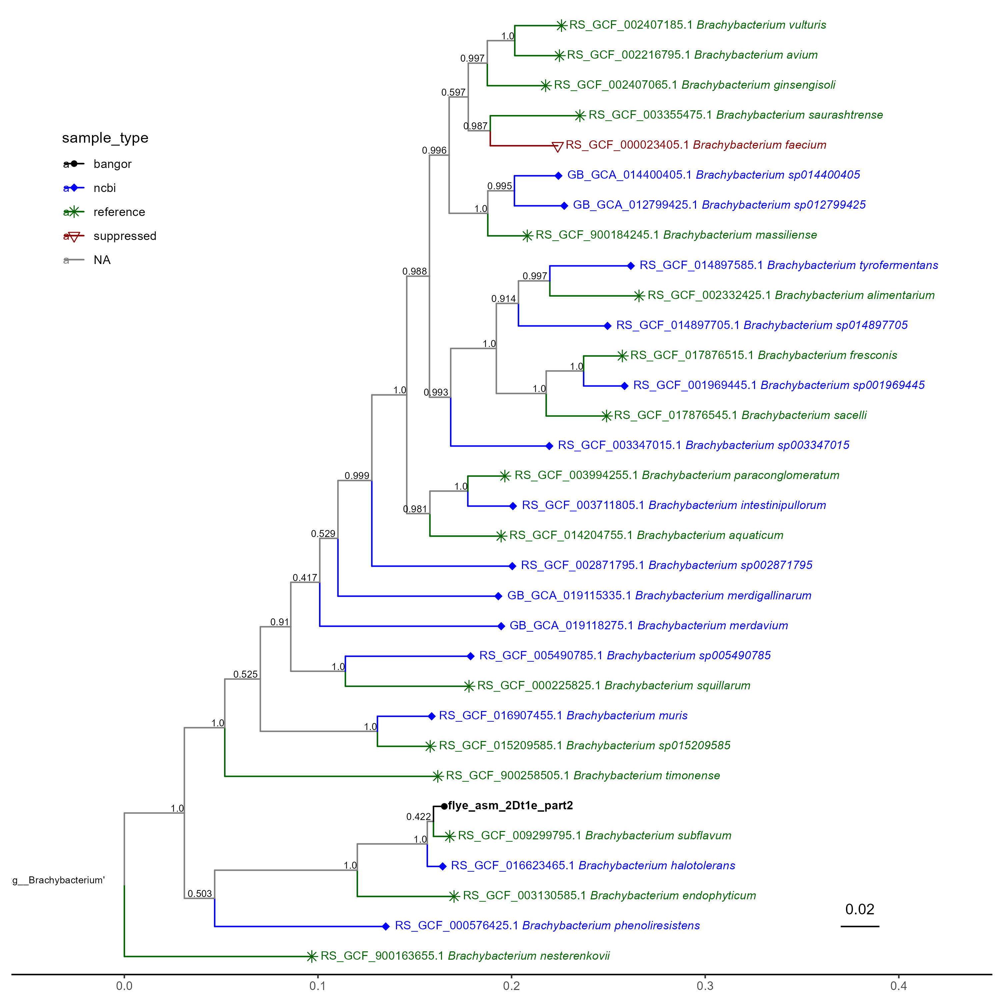
The regular trees look alright, but i wonder if a circular format would benefit the larger ones